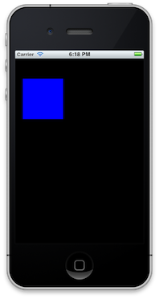

Animations
When you ask users about the biggest differences between iOS and other mobile operating systems, animations will definitely be one of the top answers. There are fades, flips, spins, bounces, and curls abound in Apple's apps.
Some of these are prominent in the default UI elements (UINavigationController, UITableView, etc), but what's really great is that they're all built upon the very same APIs you and I use. Literally every UIView is animatable with only one line of code. It's unbelievably great.
So let's have some fun. We're going to move a box around the screen. Trust me, the code is as simple as it sounds (which is a good thing!).
We'll start by adding a view to our window and animating it around a set of points. Since this is relatively short, I'll just drop all the changes for your AppDelegate right here:
def application(application, didFinishLaunchingWithOptions:launchOptions)
@window = UIWindow.alloc.initWithFrame(UIScreen.mainScreen.applicationFrame)
@window.makeKeyAndVisible
# the points we're going to animate to
@points = [[0, 0], [50, 0], [0, 50], [50, 50]]
@current_index = 0
# usual method of adding views to our window
@view = UIView.alloc.initWithFrame [@points[@current_index], [100, 100]]
@view.backgroundColor = UIColor.blueColor
@window.addSubview(@view)
animate_to_next_point
true
end
def animate_to_next_point
@current_index += 1
# keep current_index in the range [0,3]
@current_index = @current_index % @points.count
UIView.animateWithDuration(2,
animations: lambda {
@view.frame = [@points[@current_index], [100, 100]]
},
completion:lambda {|finished|
self.animate_to_next_point
}
)
end
There's a couple new structures in this code. First, the [[0, 0], [100, 100]] syntax for frame. This nested array structure is shorthand for the CGRectMake we've used before; the first sub-array represents the origin point and the second represents the size structure. This is nice because it allows easy use of @points to change the frame.
Second is lambda. If you're not familar with that terminology, lambdas are traditionally small functions assigned to variables or passed as arguments. For example, you can do my_lambda = lambda { p "Hello!" }. Now when you run my_lambda.call, the code within the lambda block will execute. Your lambda can also have an argument:
my_lambda = lambda { |name| p "Hello #{name}!" }
my_lambda.call("Clay")
=> Hello Clay
Anyway, back to our example. We create a window like usual and define some points to move our box on. We add our box (@view) to the window and start animate_to_next_point, which is where the proverbial magic happens.
The UIView.animateWithDuration:animations:completion: function is the flux-capacitor of animations: it's what makes them possible. There are a lot of parts to this function, so let's take it one at a time.
duration sets how long the animations will last, in seconds. You can use float values if you want, like 1.85. A good rule of thumb is that "quick" animations should be .3 seconds.
Any changes you make to any views in the animations: lambda will animate smoothly. How cool is that!? For comparison, on Android you have to create a custom Animation object for each property you want to animate. Now, there are some properties which aren't animatable, but common ones like frame, bounds, and alpha work just fine (for a complete list, check this). In our case, we set @view.frame to have the next origin in our set of @points.
Finally, completions: is called after your animations finish. You must accept an argument in this lambda; it will be a boolean value which tells you if the animations really did finish. Animations usually fail because they were canceled by other animations, but that only happens when you explicitly coerce it.
rake and you'll see our blue box sliding around the upper left corner of the simulator. Wasn't that gloriously easy?

Man I still can't get over how easy that was. Let's spice it up a bit by changing our animation to 1) have a delay 2) have a different "animation curve". Unfamiliar with that? Take a look at our current animation. Notice how the box speeds up and slows down in between each point? Well, look closer, I promise you it does.
The reason this happens is because the default animation curve in iOS is UIViewAnimationOptionCurveEaseInOut. It's a really nice effect because it simulates how movement often occurs in real life: we don't just start and stop on a dime, we gradually get up to speed. But for fun, let's use another curve.
We can change our animateWithDuration:animations:completion: function to it's more verbose form, animateWithDuration:delay:options:animations:completion: to change add a delay before the animation starts and mess with options. delay takes a value in seconds which will offset the start of our animations: block.
options is a bit more complicated. It takes a bit-mask of integers, which are all prefixed with UIViewAnimationOption. You can perform such a bit-mask in Ruby like so: (0 | 1 | 4) == 5. The use case for this is if you want to combine multiple animation options at the same time, like a linear animation curve and automatic animation looping: options: (UIViewAnimationOptionCurveLinear | UIViewAnimationOptionRepeat).
(there's also a less verbose form of the UIView.animate... function: animateWithDuration:animations:).
Anyway, let's do this. Change the animate_to_next_point method to this:
def animate_to_next_point
@current_index += 1
@current_index = @current_index % @points.count
UIView.animateWithDuration(2,
delay: 1,
options: UIViewAnimationOptionCurveLinear,
animations: lambda {
@view.frame = [@points[@current_index], [100, 100]]
}, completion:lambda {|finished|
self.animate_to_next_point
})
end
rake and check out the new animation.
It looks just like the old one, but its behavior is quite a bit different, no? We now have some time to breath between each new point and the sliding in between is much more mechanical.
You Know This Section
So that covers basic iOS animations. What all did we go over?
- Animations work by changing views' properties in the
animations:lambda ofanimateWithDuration:animations:and it's variants - Animations are guided by "animation curves"; examples include UIViewAnimationOptionCurveLinear and UIViewAnimationOptionCurveEaseInOut
Do a barrel roll to our next chapter and learn about Models!